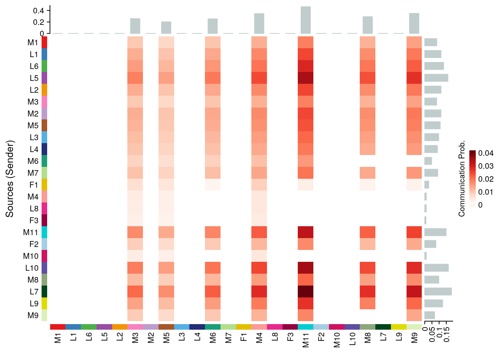
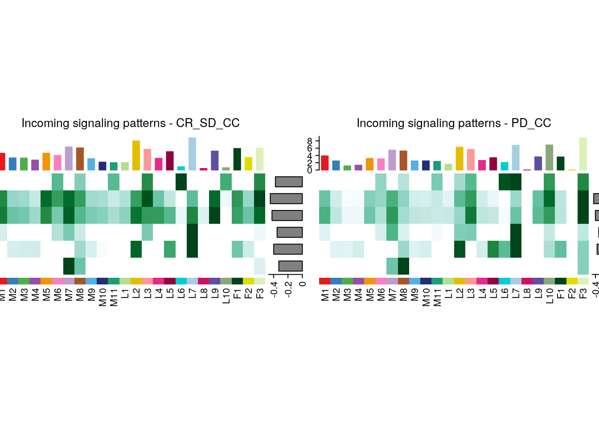
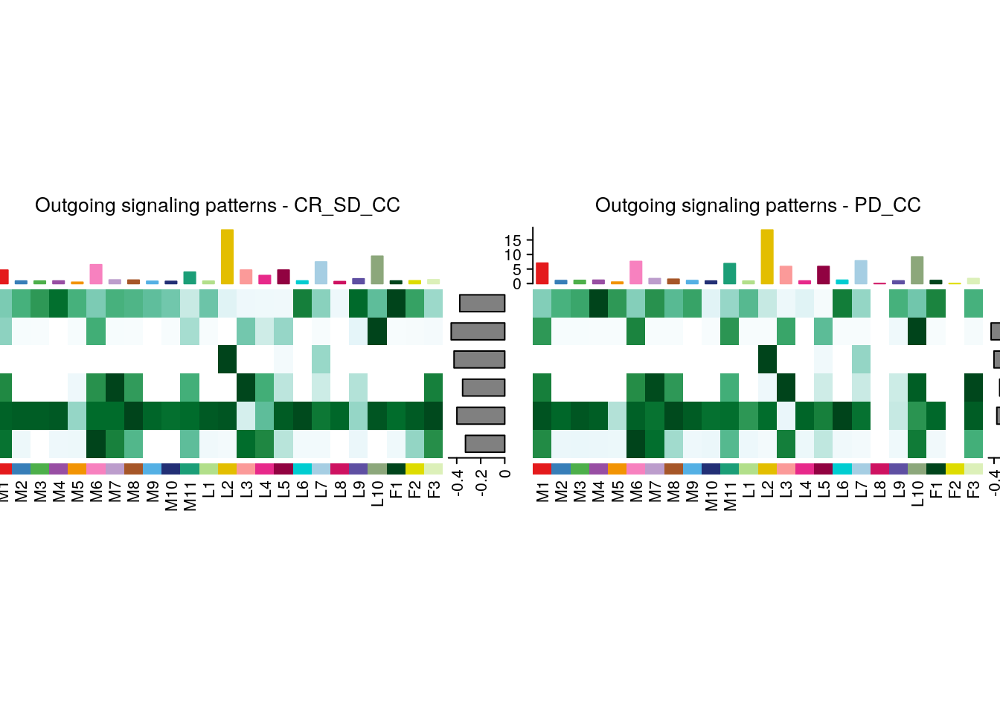

Plotting CellChat results for TGFb
heinin
2024-02-13
Last updated: 2024-02-14
Checks: 5 2
Knit directory: 13384_TGFb/
This reproducible R Markdown analysis was created with workflowr (version 1.7.1). The Checks tab describes the reproducibility checks that were applied when the results were created. The Past versions tab lists the development history.
The R Markdown is untracked by Git. To know which version of the R
Markdown file created these results, you’ll want to first commit it to
the Git repo. If you’re still working on the analysis, you can ignore
this warning. When you’re finished, you can run
wflow_publish to commit the R Markdown file and build the
HTML.
Great job! The global environment was empty. Objects defined in the global environment can affect the analysis in your R Markdown file in unknown ways. For reproduciblity it’s best to always run the code in an empty environment.
The command set.seed(20240213) was run prior to running
the code in the R Markdown file. Setting a seed ensures that any results
that rely on randomness, e.g. subsampling or permutations, are
reproducible.
Great job! Recording the operating system, R version, and package versions is critical for reproducibility.
Nice! There were no cached chunks for this analysis, so you can be confident that you successfully produced the results during this run.
Using absolute paths to the files within your workflowr project makes it difficult for you and others to run your code on a different machine. Change the absolute path(s) below to the suggested relative path(s) to make your code more reproducible.
| absolute | relative |
|---|---|
| /home/hnatri/13384_TGFb/ | . |
Great! You are using Git for version control. Tracking code development and connecting the code version to the results is critical for reproducibility.
The results in this page were generated with repository version f3a76c1. See the Past versions tab to see a history of the changes made to the R Markdown and HTML files.
Note that you need to be careful to ensure that all relevant files for
the analysis have been committed to Git prior to generating the results
(you can use wflow_publish or
wflow_git_commit). workflowr only checks the R Markdown
file, but you know if there are other scripts or data files that it
depends on. Below is the status of the Git repository when the results
were generated:
Untracked files:
Untracked: analysis/plot_cellchat.Rmd
Untracked: analysis/plot_features.Rmd
Unstaged changes:
Modified: analysis/index.Rmd
Note that any generated files, e.g. HTML, png, CSS, etc., are not included in this status report because it is ok for generated content to have uncommitted changes.
There are no past versions. Publish this analysis with
wflow_publish() to start tracking its development.
Ligand-receptor analysis focusing on TGFb
Packages and environment variables
suppressPackageStartupMessages({
library(cli)
library(Seurat)
library(SeuratObject)
library(SeuratDisk)
library(tidyverse)
library(tibble)
library(ggplot2)
library(ggpubr)
library(ggrepel)
library(workflowr)
library(googlesheets4)
library(CellChat)})
setwd("/home/hnatri/13384_TGFb/")
set.seed(9999)
options(ggrepel.max.overlaps = Inf)
# Colors, themes, cell type markers, and plot functions
source("/home/hnatri/CART/13384_Tumors/13384_tumor_ms_themes.R")
source("/home/hnatri/CART/13384_Tumors/SPP1_ms/cellchat_heatmap.R")Import data
CC_CD3_objects_compare <- readRDS("/scratch/hnatri/CART/immune_stroma_CC_compare_object_CD3_celltypenames.rds")
CC_CD3_merged_object <- readRDS("/scratch/hnatri/CART/immune_stroma_CC_merged_object_CD3_celltypenames.rds")
CC_response_objects_compare <- readRDS("/scratch/hnatri/CART/immune_stroma_CC_compare_object_response_celltypenames.rds")
CC_response_merged_object <- readRDS("/scratch/hnatri/CART/immune_stroma_CC_merged_object_response_celltypenames.rds")
CC_response_objects_compare[[1]]@idents <- factor(CC_response_objects_compare[[1]]@idents,
levels = c(paste0("M", seq(1, 11, by = 1)),
paste0("L", seq(1, 10, by = 1)),
paste0("F", seq(1, 3, by = 1))))
CC_response_objects_compare[[2]]@idents <- factor(CC_response_objects_compare[[1]]@idents,
levels = c(paste0("M", seq(1, 11, by = 1)),
paste0("L", seq(1, 10, by = 1)),
paste0("F", seq(1, 3, by = 1))))Plotting TGFb signaling between each pair of cell types
# Filtering based on pathway name
CellChatDB <- CellChatDB.human # use CellChatDB.mouse if running on mouse data
showDatabaseCategory(CellChatDB)
all_interactions <- CellChatDB$interaction
# Filtering based on a ligand/receptor
# ligand.symbol
interactions_keep <- filter(all_interactions,
grepl(paste(c("TGFB1", "TGFB2", "TGFBR1", "TGFBR2",
"TGFBR3", "SMAD2", "SMAD3", "SMAD4",
"NR3C1", "PDCD1", "CD274", "IL4R",
"CTLA4", "TIGIT", "IKZF2"), collapse="|"), ligand.symbol))
#interactions_keep <- filter(all_interactions, grepl(paste(c("TGFb"), collapse="|"), pathway_name))
pairlr_use <- data.frame("interaction_name" = unique(interactions_keep$interaction_name))
pathways.show <- c("TGFb")
#par(mfrow = c(1,2), xpd=TRUE)
#ht <- list()
#for (i in 1:length(CC_response_objects_compare)) {
# ht[[i]] <- netVisual_heatmap(CC_response_objects_compare[[i]],
# signaling = pathways.show,
# color.heatmap = "Reds",
# measure = "count",
# slot.name = "netP",
# cluster.rows = T,
# cluster.cols = T,
# title.name = paste(pathways.show, "signaling ", names(CC_response_objects_compare)[i]))
# #color.use = tumor_cluster_col_c[1:13])
#}
#
#ht[[1]] + ht[[2]]
netVisual_heatmap(CC_response_objects_compare[["CR_SD_CC"]],
signaling = c("TGFb"),
color.heatmap = "Reds",
measure = "count",
#cluster.rows = T,
#cluster.cols = T,
title.name = "")Do heatmap based on a single object 
p1 <- netVisual_bubble(CC_response_merged_object,
#sources.use = plot_myeloid,
#targets.use = plot_stroma,
signaling = c("TGFb"),
comparison = c(1, 2),
max.dataset = 2,
thresh = 0.01,
#pairLR.use = pairlr_use, # a df with one column of either "interaction_name" or "pathway_name"
title.name = paste0("Up-regulated signaling in ", names(CC_response_objects_compare)[2]),
angle.x = 45,
remove.isolate = T)Comparing communications on a merged object Warning: Vectorized input to `element_text()` is not officially supported.
ℹ Results may be unexpected or may change in future versions of ggplot2.# Plotting pathways of interest in each cell type
for (i in 1:length(CC_response_objects_compare)) {
CC_response_objects_compare[[i]] <- netAnalysis_computeCentrality(CC_response_objects_compare[[i]])
}
# Combining all the identified signaling pathways from different datasets
pathway.union <- union(CC_response_objects_compare[[1]]@netP$pathways, CC_response_objects_compare[[2]]@netP$pathways)
pathway.union <- c("TGFb", "SPP1", "COLLAGEN", "VISFATIN", "CypA", "IL1")
ht1 = netAnalysis_signalingRole_heatmap(CC_response_objects_compare[[1]],
pattern = "incoming", signaling = pathway.union,
title = names(CC_response_objects_compare)[1],
width = 8, height = 3)
ht2 = netAnalysis_signalingRole_heatmap(CC_response_objects_compare[[2]],
pattern = "incoming", signaling = pathway.union,
title = names(CC_response_objects_compare)[2],
width = 8, height = 3)
draw(ht1 + ht2, ht_gap = unit(0.5, "cm"))Warning: Heatmap/annotation names are duplicated: Relative strength
ht1 = netAnalysis_signalingRole_heatmap(CC_response_objects_compare[[1]],
pattern = "outgoing", signaling = pathway.union,
title = names(CC_response_objects_compare)[1],
width = 8, height = 3)
ht2 = netAnalysis_signalingRole_heatmap(CC_response_objects_compare[[2]],
pattern = "outgoing", signaling = pathway.union,
title = names(CC_response_objects_compare)[2],
width = 8, height = 3)
draw(ht1 + ht2, ht_gap = unit(0.5, "cm"))Warning: Heatmap/annotation names are duplicated: Relative strength
sessionInfo()R version 4.3.0 (2023-04-21)
Platform: x86_64-pc-linux-gnu (64-bit)
Running under: Ubuntu 22.04.3 LTS
Matrix products: default
BLAS: /usr/lib/x86_64-linux-gnu/openblas-pthread/libblas.so.3
LAPACK: /usr/lib/x86_64-linux-gnu/openblas-pthread/libopenblasp-r0.3.20.so; LAPACK version 3.10.0
locale:
[1] LC_CTYPE=en_US.UTF-8 LC_NUMERIC=C
[3] LC_TIME=en_US.UTF-8 LC_COLLATE=en_US.UTF-8
[5] LC_MONETARY=en_US.UTF-8 LC_MESSAGES=en_US.UTF-8
[7] LC_PAPER=en_US.UTF-8 LC_NAME=C
[9] LC_ADDRESS=C LC_TELEPHONE=C
[11] LC_MEASUREMENT=en_US.UTF-8 LC_IDENTIFICATION=C
time zone: Etc/UTC
tzcode source: system (glibc)
attached base packages:
[1] grid stats graphics grDevices utils datasets methods
[8] base
other attached packages:
[1] ComplexHeatmap_2.18.0 circlize_0.4.15 plyr_1.8.8
[4] RColorBrewer_1.1-3 CellChat_2.1.1 bigmemory_4.6.1
[7] Biobase_2.62.0 BiocGenerics_0.48.1 igraph_1.4.3
[10] googlesheets4_1.1.0 workflowr_1.7.1 ggrepel_0.9.3
[13] ggpubr_0.6.0 lubridate_1.9.2 forcats_1.0.0
[16] stringr_1.5.0 dplyr_1.1.2 purrr_1.0.1
[19] readr_2.1.4 tidyr_1.3.0 tibble_3.2.1
[22] ggplot2_3.4.2 tidyverse_2.0.0 SeuratDisk_0.0.0.9021
[25] Seurat_5.0.1 SeuratObject_5.0.1 sp_1.6-1
[28] cli_3.6.1
loaded via a namespace (and not attached):
[1] RcppAnnoy_0.0.20 splines_4.3.0 later_1.3.1
[4] cellranger_1.1.0 polyclip_1.10-4 ggnetwork_0.5.12
[7] fastDummies_1.7.3 lifecycle_1.0.3 rstatix_0.7.2
[10] doParallel_1.0.17 rprojroot_2.0.3 globals_0.16.2
[13] processx_3.8.1 lattice_0.21-8 hdf5r_1.3.8
[16] MASS_7.3-60 backports_1.4.1 magrittr_2.0.3
[19] plotly_4.10.2 sass_0.4.6 rmarkdown_2.22
[22] jquerylib_0.1.4 yaml_2.3.7 httpuv_1.6.11
[25] NMF_0.26 sctransform_0.4.1 spam_2.9-1
[28] spatstat.sparse_3.0-1 reticulate_1.29 cowplot_1.1.1
[31] pbapply_1.7-0 abind_1.4-5 Rtsne_0.16
[34] presto_1.0.0 git2r_0.32.0 IRanges_2.36.0
[37] S4Vectors_0.40.2 irlba_2.3.5.1 listenv_0.9.0
[40] spatstat.utils_3.0-3 goftest_1.2-3 RSpectra_0.16-1
[43] spatstat.random_3.1-5 fitdistrplus_1.1-11 parallelly_1.36.0
[46] svglite_2.1.1 leiden_0.4.3 codetools_0.2-19
[49] shape_1.4.6 tidyselect_1.2.0 farver_2.1.1
[52] stats4_4.3.0 matrixStats_1.0.0 spatstat.explore_3.2-1
[55] googledrive_2.1.0 jsonlite_1.8.5 GetoptLong_1.0.5
[58] BiocNeighbors_1.20.2 ellipsis_0.3.2 progressr_0.13.0
[61] ggalluvial_0.12.5 ggridges_0.5.4 survival_3.5-5
[64] iterators_1.0.14 systemfonts_1.0.4 foreach_1.5.2
[67] tools_4.3.0 sna_2.7-1 ica_1.0-3
[70] Rcpp_1.0.10 glue_1.6.2 gridExtra_2.3
[73] xfun_0.39 withr_2.5.0 BiocManager_1.30.20
[76] fastmap_1.1.1 fansi_1.0.4 callr_3.7.3
[79] digest_0.6.31 timechange_0.2.0 R6_2.5.1
[82] mime_0.12 colorspace_2.1-0 Cairo_1.6-0
[85] scattermore_1.2 tensor_1.5 spatstat.data_3.0-1
[88] utf8_1.2.3 generics_0.1.3 data.table_1.14.8
[91] FNN_1.1.3.2 httr_1.4.6 htmlwidgets_1.6.2
[94] whisker_0.4.1 uwot_0.1.14 pkgconfig_2.0.3
[97] gtable_0.3.3 registry_0.5-1 lmtest_0.9-40
[100] htmltools_0.5.5 carData_3.0-5 dotCall64_1.0-2
[103] clue_0.3-64 scales_1.2.1 png_0.1-8
[106] bigmemory.sri_0.1.6 knitr_1.43 rstudioapi_0.14
[109] rjson_0.2.21 uuid_1.1-0 tzdb_0.4.0
[112] reshape2_1.4.4 curl_5.0.0 coda_0.19-4
[115] statnet.common_4.9.0 nlme_3.1-162 GlobalOptions_0.1.2
[118] cachem_1.0.8 zoo_1.8-12 KernSmooth_2.23-21
[121] parallel_4.3.0 miniUI_0.1.1.1 pillar_1.9.0
[124] vctrs_0.6.2 RANN_2.6.1 promises_1.2.0.1
[127] car_3.1-2 xtable_1.8-4 cluster_2.1.4
[130] evaluate_0.21 magick_2.7.4 compiler_4.3.0
[133] rngtools_1.5.2 rlang_1.1.1 crayon_1.5.2
[136] future.apply_1.11.0 ggsignif_0.6.4 labeling_0.4.2
[139] ps_1.7.5 getPass_0.2-4 fs_1.6.2
[142] stringi_1.7.12 network_1.18.1 BiocParallel_1.36.0
[145] gridBase_0.4-7 viridisLite_0.4.2 deldir_1.0-9
[148] munsell_0.5.0 lazyeval_0.2.2 spatstat.geom_3.2-1
[151] Matrix_1.6-5 RcppHNSW_0.5.0 hms_1.1.3
[154] patchwork_1.1.2 bit64_4.0.5 future_1.32.0
[157] shiny_1.7.4 highr_0.10 ROCR_1.0-11
[160] gargle_1.4.0 broom_1.0.4 bslib_0.4.2
[163] bit_4.0.5